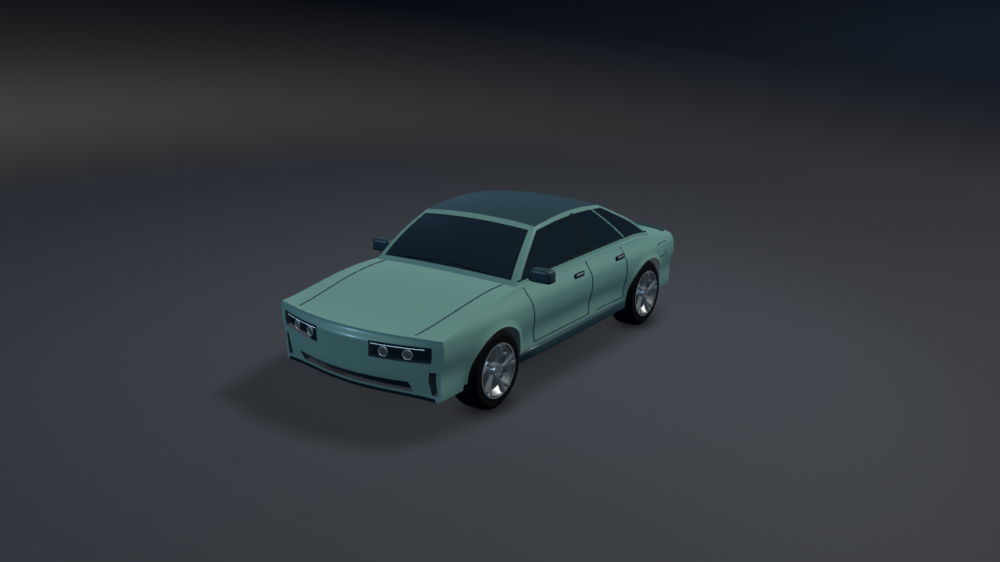
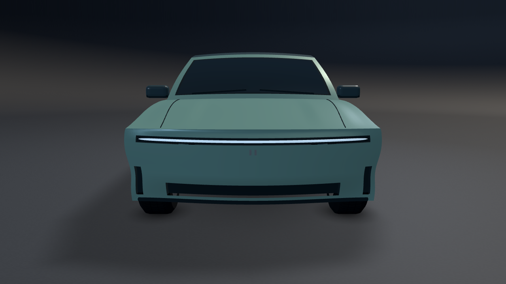
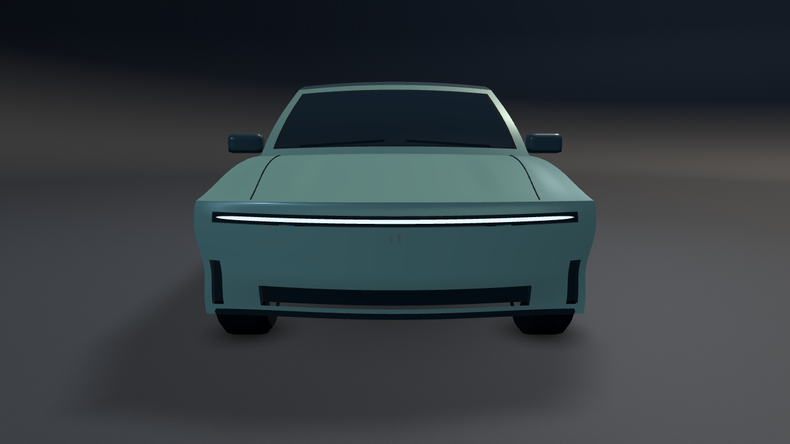
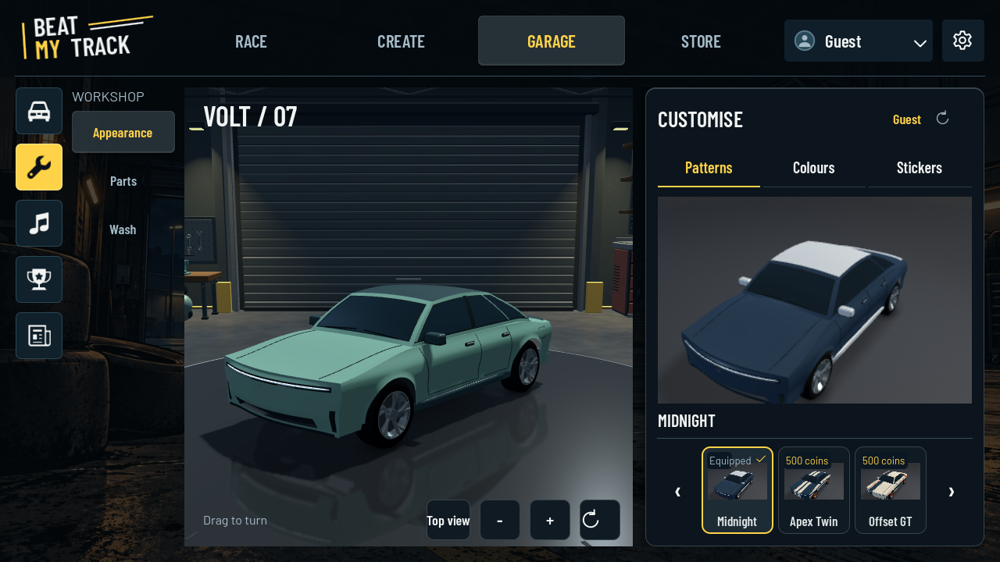
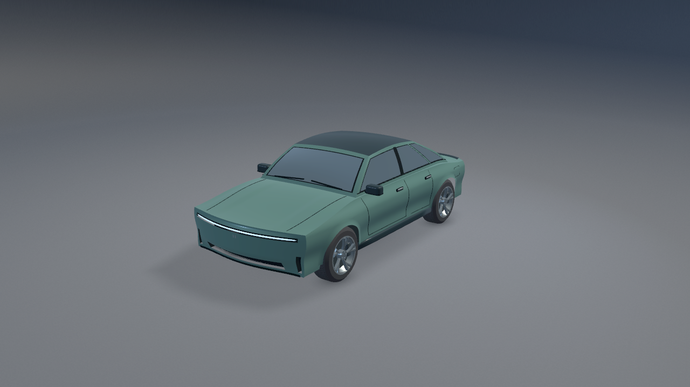

A single narrow diffuser follows the curved nose. The previous round lamps are removed and the badge sits below the uninterrupted light. Native Godot captures; Mobile means the desktop Vulkan renderer.




